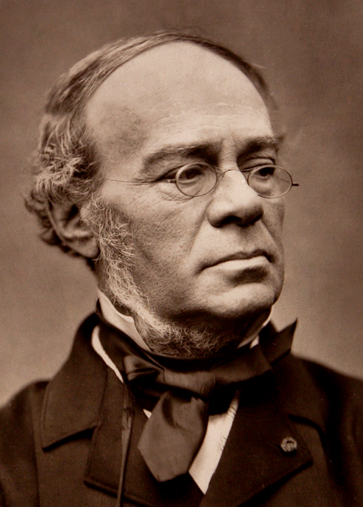

Bassoon Players
Julius Weissenborn
What is a Bassoonist?
A musician graced with the blessing of being picked for bassoon in their high school band, or someone with knowledge enough of this profoundly wonderful instrument to choose it. Bassoonists tend to be a little on the nutty side. When approaching a bassoonist right after a rehearsal, be very cautious until you know if the piece was good or not. If it was good, run, or you will never hear the end of it. If it was very bad, run, or you may detect bad vibes unintentionally directed at you. If it was a trombone, baritone, or tuba part, run. Just run.
Canadian
- Nadina Mackie Jackson
- Julia Lockhart
- Adam Romey
- Patrick Bolduc
- Marie Sellar
Other
- Julius Weissenborn
- Hugo Fox
- Bernard Garfield